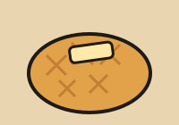
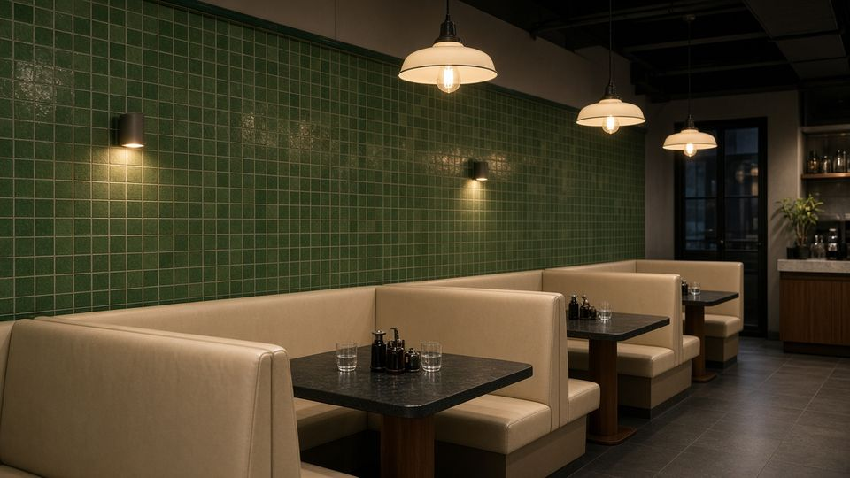

SIGNATURE招牌推介
- 招牌
絲襪奶茶
茶底濃滑，每日新鮮泡製。
HK$16 
招牌菠蘿油
熱辣出爐，牛油冰凍對比。
HK$14- 招牌
焗豬扒飯
厚切豬扒配蕃茄汁。
HK$58
ABOUT關於我們

港味茶餐廳（虛構）以街坊價錢提供地道港式味道，用料新鮮、落單快、坐得舒服，歡迎一家大細或朋友小聚。
REVIEWS食客評價（示範）
以下評價為虛構示範內容。
「奶茶夠滑，菠蘿油一流！」— 陳小姐（示範）
「午市出餐快，啱上班族。」— 李先生（示範）
「豬扒飯份量足，價錢合理。」— 黃太（示範）
FAQ常見問題
可以訂位嗎？
可以，經 WhatsApp 提供人數及時間即可。
有無外賣自取？
設外賣自取，請先 WhatsApp 落單。
可唔可以收信用卡？
示範網站，實際付款方式以真實店舖為準。
NOTICE訂位須知
- 訂位會保留 15 分鐘，逾時恕不另行通知。
- 6 人或以上請提早一日預約。
- 繁忙時段（12:00–14:00）可能需限時用餐。
VISIT地址、營業時間及預約
地址：九龍旺角示範街 1 號（虛構地址）
營業時間：每日 07:00–21:00
此為示範網站，如想訂製類似網站請聯絡一頁通 OnePage HK
在 OpenStreetMap 查看旺角地圖（地圖位置僅供示範）
※ 本網站為示範作品：店名、地址、評價均為虛構。